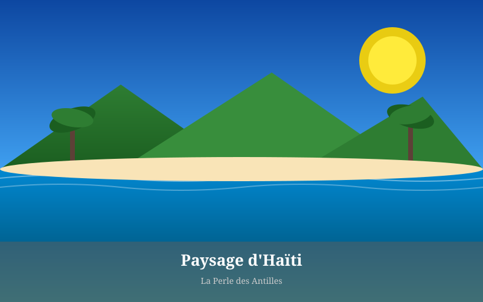

Économie & Territoire
Entre subsistance et export, le secteur agricole d'Haïti porte à la fois la mémoire du pays et ses défis les plus urgents.

Pilier Historique
Avant 1804, Saint-Domingue était la colonie la plus productive du monde — elle fournissait 40 % du sucre et 60 % du café consommés en Europe. Cette richesse reposait entièrement sur le travail forcé de 500 000 personnes réduites en esclavage. Après l'indépendance, le nouveau gouvernement haïtien a dû repenser entièrement le système foncier : la grande plantation esclavagiste a été divisée et redistribuée aux soldats de la révolution.
Ce morcellement foncier — héritage direct de l'indépendance — a façonné l'agriculture haïtienne pour les deux siècles suivants. Haïti est aujourd'hui un pays de petits agriculteurs, avec des exploitations qui font souvent moins d'un hectare. C'est une réalité économique et sociale profonde, que les programmes d'aide internationale comprennent rarement.
Cultures et Filières
Le café haïtien est l'un des meilleurs au monde — peu connu car produit en très petites quantités sur les flancs des massifs du Sud et du Nord. La variété Typica, cultivée en altitude sous couvert d'arbres forestiers (culture agroforestière traditionnelle), produit un café d'exception qui se vend sur les marchés spécialisés. Pourtant, la filière café a décliné dramatiquement depuis les années 1950 faute d'investissement.
La canne à sucre reste cultivée, mais pour la production locale de clairin — alcool de canne artisanal — plutôt que pour l'export industriel. Le clairin est en train de gagner une réputation internationale dans les cercles des spiritueux artisanaux.
La mangue Francisque est l'un des rares produits agricoles haïtiens exportés à grande échelle, principalement vers les États-Unis. C'est une variété douce et peu fibreuse, prisée des épiceries spécialisées nord-américaines. Mais la filière souffre de problèmes de certification phytosanitaire et de transport.
Productions principales
Défis et Perspectives
La déforestation est le premier défi. Sans couverture forestière, les sols s'érodent, les sources tarissent et les rendements baissent. Des programmes de reboisement existent depuis les années 1950 mais n'ont pas réussi à inverser la tendance. Les solutions qui fonctionnent localement — comme la technique de l'agroforesterie pratiquée par les producteurs de café — peinent à être généralisées.
Le changement climatique aggrave les cyclones et les sécheresses, frappant de plein fouet un secteur agricole sans infrastructures d'irrigation. L'agriculture haïtienne reste majoritairement pluviale — dépendante des pluies saisonnières qui deviennent de plus en plus imprévisibles.
Documentation